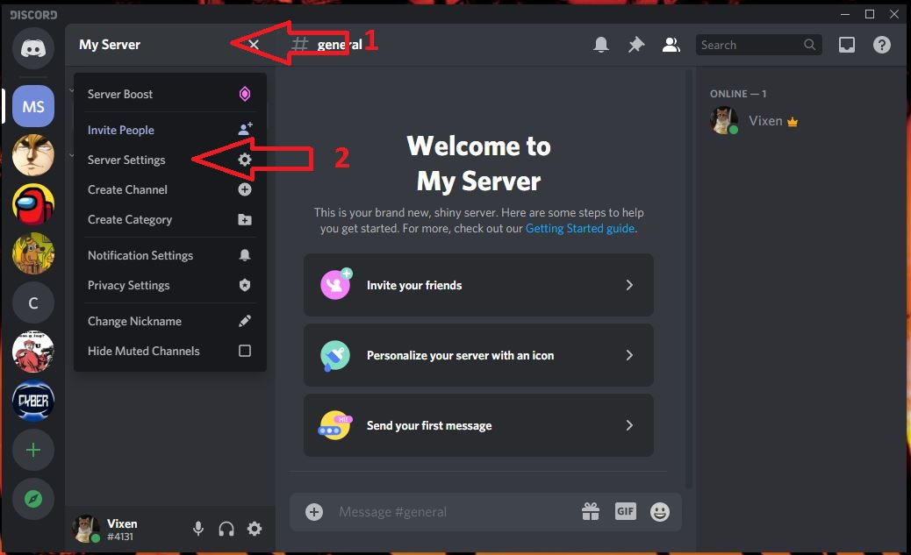
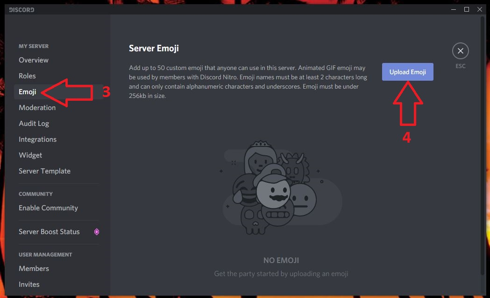
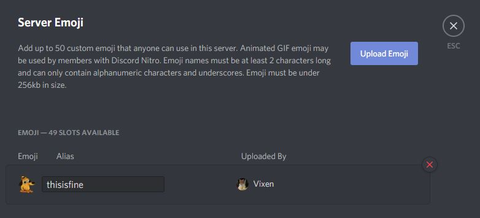
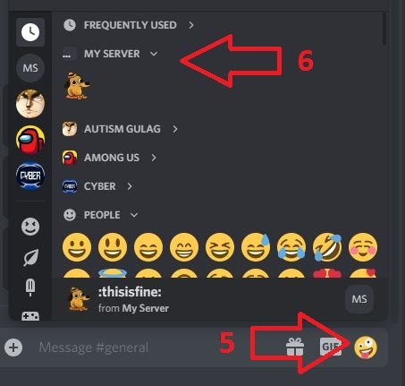

How to Add Custom Emoticons to Server
Here you will learn how to add your own emoticons to a Discord Server.
To add emojis, you need to be a server owner, or to have manage emoji permissions.
You also need to have a prepared emoticon.
Every server has a library of emojis and you can customize it by adding your own emoticons. If you are the server owner, you have this option by default, but if you are not - you can ask the owner to give you permission to manage emoticons.
- Click on the server name in the top left of the application.
- Select Server Settings. 
- Click on the Emoji tab.
- Click on the button Upload Emoji. 
- Select the emoji you want to add and click Open.
If you have followed the steps correctly, your Emoji tab will look like this: 
Your emoji is now added to the Server. You can find it by clicking on the emoji tab(5) under your server's name(6).
